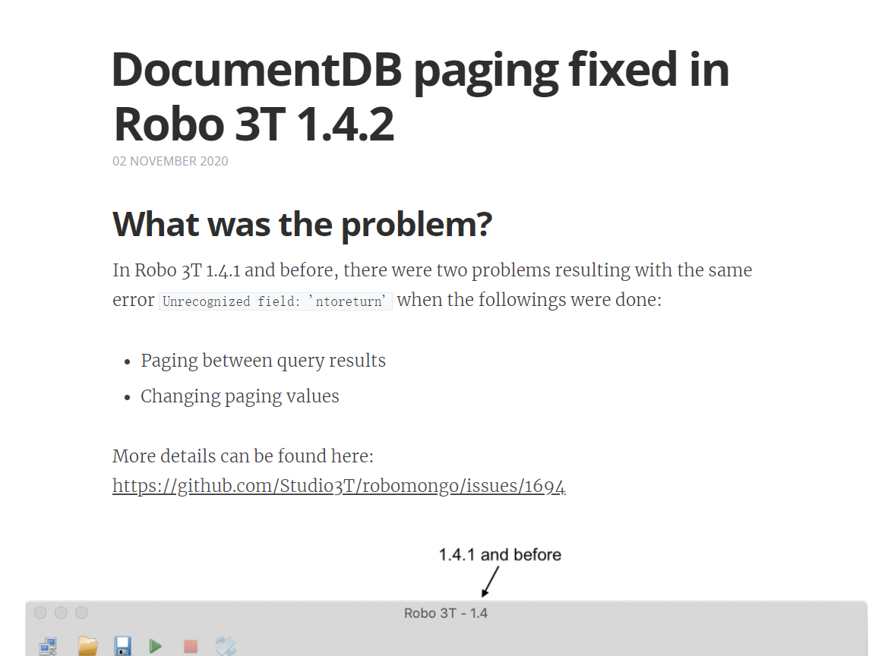
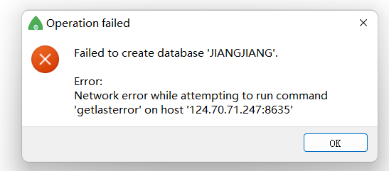
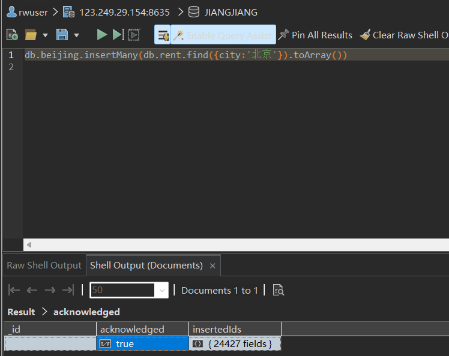

Nosql实验--租房总数据
目录
实验一 熟悉实验环境和实验数据
1、熟悉华为 GaussDB for MongoDB 数据库的操作。
2、下载并了解实验数据。
由于没有弄清楚openguess和guessdb for mongo的区别，尝试用dbeaver连接的错误尝试：
华为云手册中使用1.4版本的robo 3t，官网的robo 3t升级成了Studio 3T，界面有了很大不同，对着教程操作困难。前往github下载之前发行的版本：

根据教程连接上云数据库后，发现自己无法创建数据库，使用shell执行use命令后无法插入文档。

插入文档报错：not master
解决：连接的ip是从节点，更换公网ip至主节点。
了解实验数据：
每个文档包含_id、base_info（基本信息）、city、configuration（配置条件）、district（行政区域）、lease_mode（出租模式，整租或者合租）、price（价格）、region（地区）、title（标题，内容为更具体的地址）
基本信息包含：面积、方位、户型、更新时间、入住方式、楼层、有无电梯、供水、供电、出租时间
配置条件包含：有无洗衣机、空调、衣柜、电视、冰箱、热水器、床、宽带、燃气
实验二 设计 MongoDB 数据库、集合和文档
根据实验数据的特点，设计集合模式。集合和文档要求能够科学地组织和存储数据、高效方便地获取和维护数据。
集合模式自由，不采用固定集合，没有最大文档数量的限制，在price上添加索引
以第一行数据为例，我设计的文档为：
{
“_id” : “628c5be7d02ff41a9e47ceb7”,
“base_info” : {
“area” : “180.06”,
“direction” : “东南”,
“types” : “4室2厅2卫”,
“maintain” : “2022-05-15”,
“check_in” : “随时入住”,
“floor” : “中楼层/28层”,
“elevator” : “有”,
“water” : “民水”,
“electricity” : “民电”,
“rent_time” : “2年以内”
},
“city” : “北京”,
“configuration” : {
“washing_machine” : “有”,
“air_condition” : “有”,
“wardrobe” : “无”,
“tv” : “无”,
“refrigerator” : “有”,
“heater” : “无”,
“bed” : “有”,
“broadband” : “无”,
“gas” : “有”
},
“district” : “朝阳”,
“lease_mode” : “整租”,
“price” : NumberInt(16500),
“region” : “CBD”,
“title” : “现代城”
}
实验三 将实验数据插入数据库中
将实验数据导入实验二设计好的集合中，数据导入工具不限。
尝试直接导入：
我使用sudo 3t的最版本软件studio 3t进行导入。studio 3t功能强大，能够直接导入csv文件。
发现导入后嵌入式文档会变成一个字符串。于是必须一条一条循环插入。问题是这时插入的文档数据在excel文件中，不再是简单的1、2、3. . .如何读取文件中的数据是我要解决的难题。涉及到文件处理，我就得使用python了。
先将xlsx文件用excel另存为为csv格式，然后用python编写代码。第一次运行了一刻钟左右之后报错了，显示值已经存在。于是我进行数据预处理。在sditio 3t中统计已经插入了23000多条数据。我找到出错的第一条数据，发现竟然是一条与第一行的列标题相同的行。而后面的数据与第一条数据开始的相同，推测这23000多条数据直接重复了一遍。于是在python代码中先进行数据清洗，去除重复的数据：
raw_data = pd.read_csv(‘rent.csv’)
print(‘数据清洗前数据条数：’, len(raw_data))
# 数据清洗，去除重复值
data = raw_data.drop_duplicates(keep=’first’, inplace=False)
print(‘数据清洗后数据条数：’, len(data))
在这里如果针对’_id’进行去重我也尝试过，因为租房数据可能除了id以外其他条件几乎一样的房子也是有可能的，比如同一个小区相邻的的房子都出租。结果剩余的数据数量与上述处理一模一样，说明id相同的数据内容也是相同的。
针对与第一行的标签相同的数据导致的报错，我尝试过两种方案，一种是在json.loads方法中加入参数strict=False，一种是先使用json.dumps方法再使用json.loads方法，都在运行15分钟左右后报错。于是我进行手动数据清洗，用excel查找xlsx文件中与列标题相同的数据，查找到3条数据，将它们删除后再另存为csv文件。注意这里还要选择编码为utf-8，否则后续python中也会报错。
经过这一次处理后的文件可以顺利导入了。因为导入时间过长我还写了一行代码查看进度：
i += 1
print(‘已导入’, i, ‘/ 289149 条数据’)
原本35w多条数据在数据清洗后剩余接近30w条数据，推测在三条与列标题相同的数据后各重复了一两万条数据。观察python运行得出1w条数据大概需要6分钟处理完，全部导入需要3个小时左右。此时已经是晚上12点了，我选择第二天早上再来看结果，所幸这一次没有再报错，近30w条数据全部导入成功。
这个实验是我大学以来对“大数据”感知最深刻的实验，从来没有其他实验能占用我的电脑这么长时间，其他实验几乎都可以凭借cpu在极短时间内完成。
完整代码如下：
1 | from pymongo import MongoClient |
具体代码的思路是：通过python每次迭代csv文件中的一行，利用json.loads方法将字符串转化为字典，再嵌套到每一行的大字典中，这样就可以将每一行作为一个字典插入到集合中并且保留嵌入式文档。这里还需要注意price是文本，需要转化为数字再上传，否则后面跟房租相关的查询会很麻烦。这里多亏了python中强大的pandas模块以及这学期机器学习实验反复用python来处理csv文件让我能够做出这个实验。
成功导入为嵌入式文档：
实验四 使用交互式命令完成查询
连接华为 GaussDB for MongoDB 数据库，使用交互式命令查询数据。需要
完成以下查询：
1、查询月租金高于 20000 元的房屋；
2、查询位于北京西城区出租的房屋数量；
3、查询每个城市租金最高的房屋信息；
4、查询 2022 年 6 月以后挂牌出租的房屋信息。
查询代码如下：
1. 查询月租金高于 20000 元的房屋：
db.rent.find({‘price’:{$gt:20000}})
查询结果：
共查询到5139条月租金高于 20000 元的房屋：
2.查询位于北京西城区出租的房屋数量：
首先查询位于北京西城区的出租房屋：
db.rent.find({ $and: [ { city: ‘北京’ }, { district: ‘西城’ } ] } )
结果：
可以看到查询语句正确，结果符合北京市西城区的条件，共有2037条北京西城区的出租房屋
自己统计数量：
db.rent.find({ $and: [ { city: ‘北京’ }, { district: ‘西城’ } ] } )
结果同样是2037
3. 查询每个城市租金最高的房屋信息：
首先尝试：
db.getCollection(‘rent’).aggregate([
{“$sort”: {“price”: -1}},
{“$group”: {_id: “$city”,
firstDate: { $first: “$$ROOT” }}
}],{allowdiskuse:true})
报错：Mongo Server error (MongoCommandException): Command failed with error 16819 (Location16819): ‘Sort exceeded memory limit of 104857600 bytes, but did not opt in to external sorting. Aborting operation. Pass allowDiskUse:true to opt in.’ on server 123.249.29.154:8635.
翻译：排序超出了 104857600 字节的内存限制，但未选择加入外部排序。正在中止操作。在服务器 123.249.29.154：8635 上传递 allowDiskUse：true 以选择加入。
内存不够用，考虑加入索引来优化查询。
db.rent.createIndex({‘price’:-1})
此时再执行之前的代码即可通过索引不超过内存限制查询出结果：
db.getCollection(‘rent’).aggregate([
{“$sort”: {“price”: -1}},
{“$group”: {_id: “$city”,
firstDate: { $first: “$$ROOT” }}
}],{allowdiskuse:true}
)
结果：
尝试建立组合索引查询速度会不会更快：
建立组合索引的查询速度：
![]427f0711fab7b630d724201c6e371c91.png)
分别重复了几次发现快了一点，但差距不大，比如3.408秒优化到了3.371秒，考虑到网络差异在这个查询中几乎可以忽略。
4. 查询 2022 年 6 月以后挂牌出租的房屋信息：
db.rent.find({“base_info.maintain”:{“$gte”:”2022-06-01”}})
或者db.rent.find({“base_info.maintain”:{“$gt”:”2022-05-31”}})
结果均相同：

查看日期说明符合要求：
实验五 使用高级程序设计语言进行数据统计(本实验是选做题)
自选高级程序设计语言，自行设计界面，完成以下数据统计并将统计信息进
行展示。
1、选择你关注的一个城市，按照“city”、“户型(types)”和“整租/合租
(lease_mode)”三个属性，展示房租的均价、中位数、最高价、最低价；
我选择北京，首先创建一个新集合beijing，将city为北京的数据插入到其中，在studio 3t中插入两万多条数据要比python快很多很多：
db.beijing.insertMany(db.rent.find({city:’北京’}).toArray())

因为用python连接数据库收集数据速度太慢，我选择将集合beijing导出为csv文件在本地进行实验，并且只导入后续需要的相关属性，
即base_info.types,base_info.maintain,lease_mode,price。
导出的csv文件如下：
分析数据：
print(data[‘lease_mode’].unique())
print(data[‘base_info.maintain’].unique())
发现北京的租房数据中只有整租，没有合租，而户型足足有一两百种，于是户型与房价的关系选择不画图，用表格展示，其他画图展示。
数据收集及绘图代码：
1 | import pandas as pd |
展示：
2、选择你关注的一个城市，展示出租房屋数量与月份的关系：按照房屋
“maintain”和“city”两个属性进行统计。
数据收集及绘图代码：
1 | import pandas as pd |
展示：